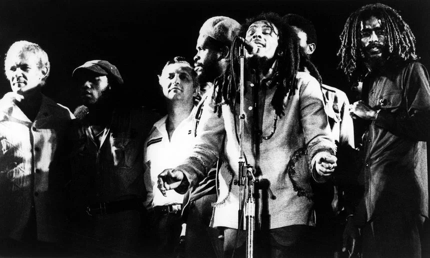
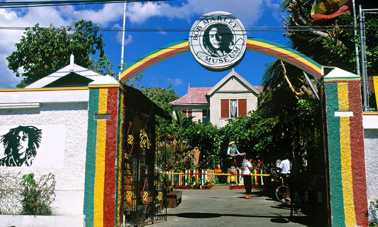

Snapchat’s ‘Bob Marley filter’ typifies the exploitation of the superstar as just a weed smoker, yet this act, as in all his life and music, was intensely political
hough hardly surprising, the simplistic reduction of Bob Marley to the personification of a giant, fat spliff has long been misleading. For essentially, his weed smoking is a minor plot in what has made the reggae king the biggest musical star in the world. It was hardly what drove Zimbabwe’s freedom fighters to find inspiration in his work: that was Marley’s true rebel spirit, revealed in his devastatingly accurate depictions of ghetto life and official oppression and corruption – the pain of Slave Driver, the rage of Rebel Music, the fury of Them Belly Full (But We Hungry), and the verbatim recording of Haile Selassie’s speech to the UN in War.
Selassie is Rastafari’s divine figure. And the truer, politically radical image of Bob Marley is interwoven with his own standing as the prophet of Rastafarianism, that odd, amorphous religion that could perhaps only have emerged from the mysterious island of Jamaica, whose permanent ganja fumes permeate the creed’s unwritten philosophy. One of Rastafari’s principal tenets is the smoking of marijuana, which it names “herb”, endowing it with Biblical sanction, as in Psalm 104: “He causeth the grass to grow for the cattle, and herb for the service of man.” As Marley himself put it: “Herb is a plant. Herb is good for everything,” clearly not referring to coriander.
Marley’s stoner god image has gained great traction, especially in the US. And this college dorm poster representation was again highlighted on Wednesday, 420 Day, by chat app Snapchat’s “Bob Marley filter”. This permitted users to have Marley’s picture superimposed over their own profile picture – some considered it a digital equivalent of “blackface”.
What makes this controversy more confusing is the news that the lens for this visual trickery was developed with the collusion of the Bob Marley estate. So a subtext here would appear to be an element of marketing for Marley Natural, the company launched by his family in Los Angeles 10 weeks ago to create and market cannabis products and accessories.
Some assume Marley would not approve. Yet the reggae superstar had a well of intelligent pragmatism, and never undersold himself when it came to promoting an alliance with marijuana. And the Bob Marley estate – his family, essentially – are playing a larger game, giving his fans what many of them want.
Let’s not forget: far more so than now, smoking weed was once considered an act of great rebellion. And Island Records, which bankrolled Marley at the instigation of its proprietor Chris Blackwell, was always astute at tapping into the zeitgeist.
When Rastaman Vibration, his US top 10 breakthrough album, was released 40 years ago this month, the inside of the gatefold sleeve – originally strewn with card divots to create a bumpy texture – contained a message declaring: “This album jacket is great for cleaning herb.” (Even in 1976, this seemed a little knowingly coy.)
Marijuana always was part of the marketing of Marley: there are libraries full of pictures of him smoking spliffs. The cover of Catch a Fire, his first album on Island Records, when still part of the Wailers’ trio, replicated a Zippo lighter, complete with hinge that risked scratching your vinyl copy.
The first time I met Marley, in 1979 at his Kingston headquarters of 56 Hope Road, where gunmen had tried to kill him three years previously, he almost straight away handed me a spliff; even then I questioned whether this was to live up to the perceived vision of himself.
But a few minutes later we were on our way to the Gun court, then situated in a prison compound. There, in the governor’s office, I watched him plead for clemency for an inmate.